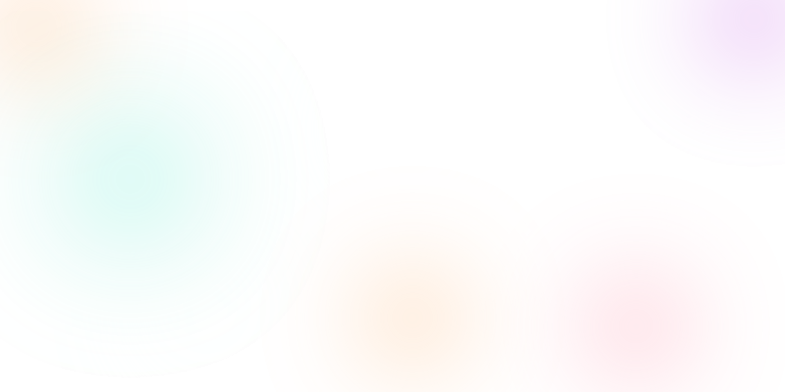
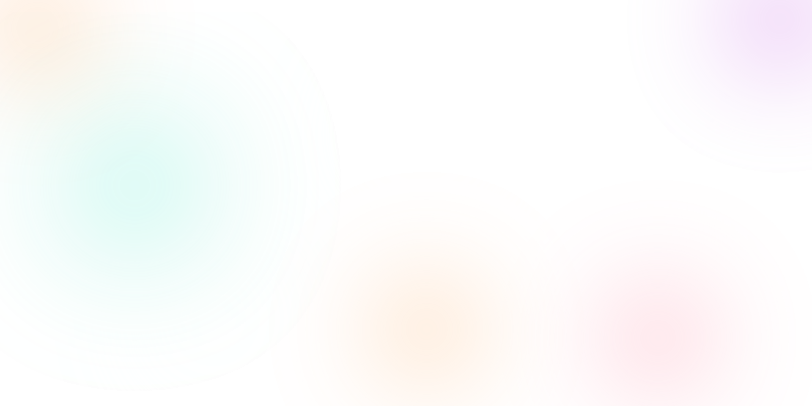

Купить CMI на SushiSwap
Купить CMI на SushiSwap
 


CMI - это индекс цифровых активов, предназначенный для отслеживания производительности рынка криптовалют. Индекс имеет равный вес между тремя активами: WBTC, ETH, USDC. Индекс CMI позволяет получить доходность всего криптовалютного рынка, держа при этом, только один токен.
Индекс CMI состоит из трех активов:
1. Wrapped Bitcoin (WBTC) - первый токен ERC20, курс которого привязан к биткоину (BTC) в пропорции 1:1.
2. Ethereum - это управляемая сообществом технология, на которой базируется криптовалюта эфир (ETH) и тысячи децентрализованных приложений.
3. USDC выпускается регулируемыми финансовыми учреждениями, обеспечен полностью зарезервированными активами, может быть обменен на доллары США в соотношении 1:1 и управляется Centre - консорциумом, основанным на членстве, который устанавливает технические, политические и финансовые стандарты для стейблкоинов.
Фаза определения происходит:
1. в течение четвертой недели каждого месяца
2. когда фактический вес одного из активов в
индексе отклоняется на 10% от целевого
распределения.
На этом этапе определяются необходимые
изменения и следующая реконструкция.
Определение распределения: распределение
индекса пересчитывается с учетом изменений
рыночных цен.
После публикации результатов фазы
определения состав индекса изменится до
целевых показателей:
1. в течение первой недели следующего месяца.
2. на следующий или в тот же день,
когда произошло 10% отклонение любого
актива от целевого распределения.
Индекс состоит из трех активов, пропорциональных друг другу. Целевое распределение индекса всегда поддерживается следующим образом: 33,33% WBTC, 33,33% ETH, 33,33% USDC. При отклонении веса любого токена от целевого распределения индекса до критического значения, индекс будет ребалансирован. Узнайте больше о ребалансировке в параграфе о Фазе Реконституции.
TW = (⅓) * IV где,
TW – вес токена в CMI
IV – стоимость индекса в долларах США
Любой клиент может выпустить новые токены
CMI, используя протокол DeFi TokenSets.
Для этого ему необходимо изначально иметь
токены, которые уже входят в Индекс, и внести
их в качестве залога в смарт-контракт для
получения CMI Индекса.
Это позволяет сократить различия между
справедливой стоимостью токена CMI и
его стоимостью на платформах DEX.
Любой держатель токена СMI может использовать децентрализованный протокол TokenSets для получения токенов, входящих в Индекс, в обмен на СMI токен.